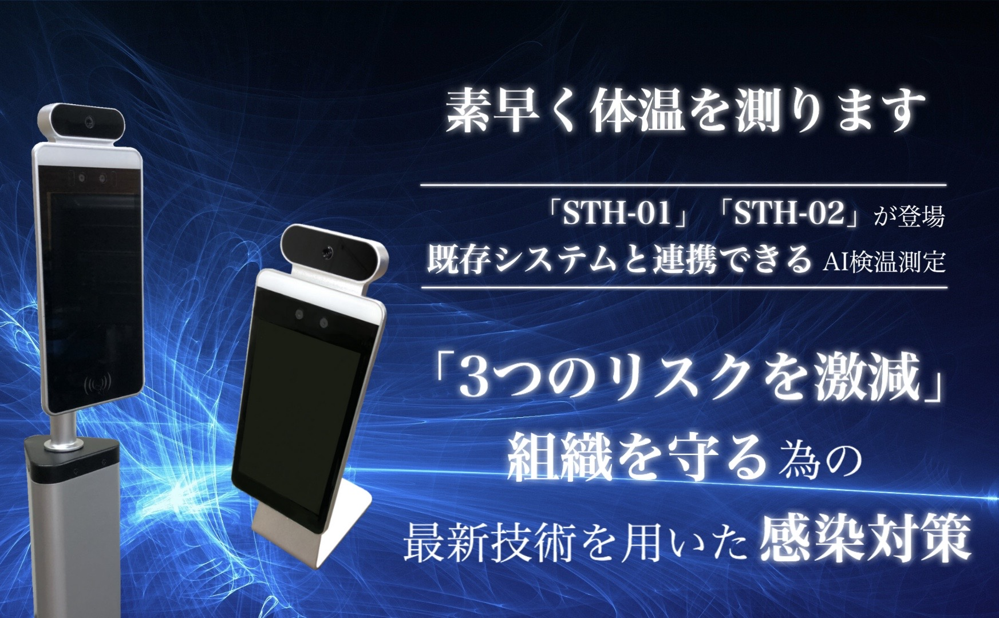
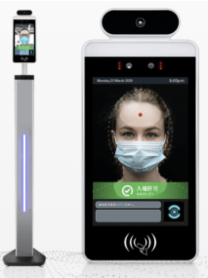

<!DOCTYPE html>
<html lang="ja">
<head>
    <meta charset="utf-8">
    <meta name="viewport" content="width=device-width, initial-scale=1">
    <link rel="stylesheet" type="text/css" href="css/style.css">
    <link href="https://fonts.googleapis.com/css2?family=Anton&display=swap" rel="stylesheet">
    <link rel="stylesheet" href="https://cdnjs.cloudflare.com/ajax/libs/font-awesome/4.6.3/css/font-awesome.css">
    <script src="https://kit.fontawesome.com/7c2c13f267.js" crossorigin="anonymous"></script>
    <title></title>
</head>
</html>
<body>
    <div class="container">
    <!-- <div class="content-bg"> -->

        <!-- headerエリアここから -->
        <header class="header">
            <div class="bg-image">
                
                <!-- <h1 class="h1">
                    「３つのリスクを激減」組織を守るための感染対策の為の最新技術！！
                    「STH-01」「STH-02」が登場
                    既存システムと連携できるAI検温測定！
                </h1> -->
            </div>
        </header>
        <!-- headerエリアここまで -->

        <!-- mainエリアここから -->
        <main class="main">

            <!-- section1エリアここから -->
            <section class="section" id="section1">
                <h2 class="h2">AI検温測定により<br class="md-none">『<span class="orange">３つのリスク</span>』が<span class="blue">激減</span>する</h2>
                <p>皆さんに伝えたい3つのリスクがありまして、<br>『<span class="orange">感染リスク</span>』『<span class="orange">訴訟リスク</span>』『<span class="orange">信用損失のリスク</span>』です、<br class="md-none">3つのリスクです。</p>
                <div class="sec-container">
                    <div class="sec-item">
                        <div class="image-box">
                            
                        </div>
                    </div>
                    <div class="sec-item">
                        <div class="image-box">
                            
                        </div>
                    </div>
                    <div class="sec-item">
                        <div class="image-box">
                            
                        </div>
                    </div>
                </div>
                <p class="risk">対策を取らないことが『<span class="orange">感染リスク</span>』『<span class="orange">訴訟リスク</span>』『<span class="orange">信用損失のリスク</span>』になる！！</p>
                <p class="desc-box">AI検温測定を実施することで、＜誰が＞＜いつ＞＜何度か＞という情報がその場で即座に分かり、<span class="blue">発熱の疑いがある者を特定することが可能</span>です。また、システム連携し測定結果をデータとして蓄積することで、<span class="blue">十分な検温検査と感染対策を実施しているという証拠を残すこと</span>もできます。</p>
                <p class="risk">『AI検温測定でこの<span class="orange">３つのリスク</span>を避けましょう』</p>
            </section>
            <!-- section1エリアここまで -->

            <!-- section2エリアここから -->
            <section class="section" id="section2">
                <div class="image-box">
                    
                    <!-- <h2 class="h2">AI検温測定・装置に対する3つの不安...</h2> -->
                </div>
                <ul class="list">
                    <li class="list-item"><i class="far fa-check-square"></i> その場で体温が分かるだけでは使い勝手が悪そう</li>
                    <li class="list-item"><i class="far fa-check-square"></i> 中国製は情報漏洩の心配がありそう</li>
                    <li class="list-item"><i class="far fa-check-square"></i> 機械やシステムに詳しくないのでスムーズに導入できなさそう</li>
                </ul>
                <p class="comment-box">システム会社にしか提供できない３つの価値によって、<br>そんな不安も解消できます！</p>
                <div class="sec-container">
                    <div class="sec-item">
                        <div class="image-box"></div>
                        <div class="text-box">
                            <p>
                                システム会社だからこそできる、既存のシステム
                                への連携を含めたAI検査装置を提供します。
                                オーダーメイドのシステム込みでAI検査測定を
                                提供するので、使い勝手の悪さは感じません。
                            </p>
                        </div>
                    </div>
                    <div class="sec-item">
                        <div class="image-box"></div>
                        <div class="text-box">
                            <p>
                                中国製でも安心です。AI検温アプリは
                                AndroidOSで開発されています。
                                そして当社はiOS、AndroidOSの
                                技術者集団なのでセキュリティ問題にも
                                徹底的に考慮したAI検温測定を
                                提供します。
                            </p>
                        </div>
                    </div>
                    <div class="sec-item">
                        <div class="image-box"></div>
                        <div class="text-box">
                            <p>
                                IT技術者がサポートを行います。
                                AI検査測定の導入からシステム連携までを
                                一括で任せることができるから
                                スムーズな導入を約束できます。
                            </p>
                        </div>
                    </div>
                </div>
            </section>
            <!-- section2エリアここまで -->

            <!-- section3エリアここから -->
            <section class="section" id="section3">
                <div class="image-box">
                    
                </div>
                <h2 class="h2">STH-01 STH-02の特徴</h2>
                <div class="list-box">
                    <h3 class="h3">システム連携可能なAI検温測定</h3>
                    <ul class="list">
                        <li class="list-item"><i class="far fa-check-square"></i> AI検温アプリにはAPIがあり<span class="blue">他のシステムと連携が可能</span></li>
                        <li class="list-item"><i class="far fa-check-square"></i> 勤怠システム、会員システムなどと連携することができます</li>
                    </ul>
                </div>
                <div class="list-box">
                    <h3 class="h3">精度の高い検査</h3>
                    <ul class="list">
                        <li class="list-item"><i class="far fa-check-square"></i> 高性能赤外線カメラによる体温測定により誤差<span class="num">±0.3</span>℃の体温測定</li>
                        <li class="list-item"><i class="far fa-check-square"></i> 人体温度検知距離は<span class="num">0.5</span>〜<span class="num">1</span>メートルあり、マスク着用中でも検温可能</li>
                        <li class="list-item"><i class="far fa-check-square"></i> 顔データを２つ記録し、顔識別時のヒット率は<span class="num">99.99</span>％</li>
                    </ul>
                </div>
                <div class="list-box">
                    <h3 class="h3">高性能な装置</h3>
                    <ul class="list">
                        <li class="list-item"><i class="far fa-check-square"></i> アルミ合金を採用し、防水、防塵、高温耐性を備えており、<span class="blue">どんな場所にも耐えうる</span>タフな装置</li>
                        <li class="list-item"><i class="far fa-check-square"></i> ８インチ液晶ディスプレイ、スーパークアッドコアCPU、双眼鏡RGB＋赤外線カメラ、カラーフィルライト、デュアル赤外線フィルライト搭載により<span class="blue">リアルタイムで精度の高い検温、顔検出、顔認証が可能</span></li>
                    </ul>
                </div>
                <h3 class="h3">STH-01 STH-02は場所を選ばず設置できる</h3>
                <div class="sec-container">
                    <div class="sec-item">
                        <div class="image-box">
                            
                        </div>
                    </div>
                    <div class="sec-item">
                        <div class="text-box">
                            <p>
                                AI検温装置は細身であり広いスペースは不要であるため、
                                <span class="blue">あらゆる施設の出入り口や通路に設置することが可能</span>です。<br>
                                さらに、置き型であるため<span class="blue">人が測定するなどの手間も近づく必要もなく</span>、ソーシャルディスタンスを配慮することもできます。
                            </p>
                            <p class="comment">※雨風や直射日光は検温精度の低下や装置の故障の原因に繋がる場合があります。</p>
                            <p class="comment">※設置の際には電源が必要です。</p>
                        </div>
                        <div class="image-group">
                            
                            
                        </div>
                    </div>
                </div>
            </section>
            <!-- section3エリアここまで -->

            <!-- section4エリアここから -->
            <section class="section" id="section4">
                <div class="text-box">
                    <h3 class="h3">
                        『<span class="orange">感染リスク</span>』『<span class="orange">訴訟リスク</span>』『<span class="orange">信用損失のリスク</span>』それらを<br>
                        激減させるAI検温測定による最新対策
                    </h3>
                    <p class="price">検温測定装置＋システム連携で<span class="price">50</span>万円〜</p>
                    <p>※価格はお問い合わせ内容によって変化します。</p>
                </div>
                <div class="form-box">
                    <form action="" method="POST" class="form">
                        <p>
                            システム会社が提供する「システムと連携できるAI検温測定」<br>
                            STH-01とSTH-02のお問い合わせはこちらから
                        </p>
                        <p>お問い合わせ</p>
                        <table class="form-table">
                            <tr class="sec-container">
                                <th class="sec-th"><label for="name">貴社名</label></th>
                                <td class="sec-td"><input id="name" type="text" name="" class="input" required></td>
                            </tr>
                            <tr class="sec-container">
                                <th class="sec-th"><label for="name">担当者名</label></th>
                                <td class="sec-td"><input id="name" type="text" name="" class="input" required></td>
                            </tr>
                            <tr class="sec-container">
                                <th class="sec-th"><label for="msg">お問い合わせ内容</label></th>
                                <td class="sec-td"><textarea id="msg" cols="30" rows="10" name="" class="textarea" required></textarea></td>
                            </tr>
                        </table>
                        <div class="btn-box">
                            <button class="btn" type="submit" name="button">送信</button>
                        </div>
                    </form>
                </div>
            </section>
            <!-- section4エリアここまで -->

        </main>
        <!-- mainエリアここまで -->

        <!-- footerエリアここから -->
        <footer class="footer">
            <small>CopyRight&copy; JokerPiece Co.,Ltd. All rights reserved.</small>
        </footer>
        <!-- footerエリアここまで -->

    <!-- </div> -->
    </div>
</body>